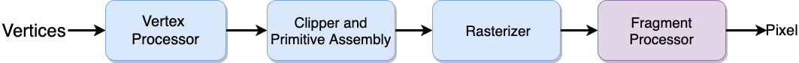

计算机图形学
第二章 图形学编程
图像生成
图像生成
如何生成图像
是否能够设计实现专用的图形学硬件和软件，以符合合成相机模型，以生成图像？
需要提供API满足应用程序开发的需要，至少需要提供对象、材质、观察、光线等的计算和模拟
这些API又该如何实现？
图像生成
物理方法
- 光线跟踪，从投影中心沿着光路计算，直到光线投身到无穷远处，或者被物体吸收为止
- 可有效地实现全局光照效果，如多重反射、半透明效果等
- 计算量大，速度较慢
- 计算过程中始终需要场景中所有物体的数据
- 辐射，用基于能量的方法计算，与光线跟踪相比，计算量更大，速度更悭

图像生成
实践方法
根据应用程序生成图像需要历经的顺序一次一步处理，其好处在于可以仅考虑局部光照
WebGL处理流水线

所有的步骤都在图形计算硬件中实现
图像生成
顶点处理
流水线中绝大部分的计算都是在将用于表示物体的一系列顶点从一个坐标系变换到另一个坐标系中，其中主要的坐标系包括：
- 物体坐标系
- 相机坐标系
- 屏幕坐标系
每一次坐标系的变换都相当于进行矩阵计算，因此这也是顶点处理需要完成的工作
同时，顶点处理还负责计算顶点的颜色

图像生成
投影
投影的过程，即是通过三维观察，将三维物体对象投身到成像平面上形成二维图像的过程
- 透视投影：所有的投影线汇聚于投影中心
- 平行投影：所有的投影线都平行，投影中心指向投影方向
图像生成
图元合成
在裁剪和光栅化之前，所有的顶点需要先构成几何形体，包括线段、多边形、曲线和曲面等

图像生成
裁剪
裁剪，即指将位于相机成像空间外的对象去除，只保留在空间内可见的物体对象


图像生成
光栅化
如果场景中的物体对象没有被裁剪，在帧缓存中与该物体对应的像素就需要指定一种颜色
光栅化会为每个对象生成一组用于表示该对象的面片，可理解为”潜在“的像素，每个面片在面片缓存中都有对应的位置，都有颜色、深度两个属性，而这些属性都可以通过插值计算得到

图像生成
面片处理
面片处理的目的是确定在帧缓存中每个对应像素的颜色。颜色值可以是纹理映射的结果，也可以是对顶点颜色进行插值计算的结果
面片也会被其它距离相机更近的面片遮挡，其颜色就取决于离相API的面片的颜色，这种技术称为”隐面消除"
图像生成
编程接口
从应用程序开发的角度来看，图形系统是通过一系列软件接口实现的，即应用程序接口(Application Programmer Interface, API)
API需要提供对图像生成各阶段功能的支持，包括对象描述，观察者，光源，材质，除此之外，还需要提供对于输入设备的支持，及其它系统功能

图像生成
对象描述API
大部分的API都能支持有限的基本元素，包括
- 点(0d)
- 线段(1d)
- 多边形(2d)
- 部分曲线和曲面(如：二次曲线，参数多项式曲线等)
所有的基本元素都是通过空间中的位置坐标或顶点定义
图像生成
对象描述API示例
OpenGL版
glBegin(GL_POLYGON);
glVertex3f( 0.0, 0.0, 0.0 );
glVertex3f( 0.0, 1.0, 0.0 );
glVertex3f( 0.0, 0.0, 1.0 );
glEdn();
根据不同的参数绘制不同类型的对象，数据可以在CPU中处理后，再通过管线传递给GPU
GPU版
var points=[
vec3( 0.0, 0.0, 0.0 ),
vec3( 0.0, 1.0, 0.0 ).
vec3( 0.0, 0.0, 1.0 ),
];
将几何顶点信息放在数组中，将数组传递给GPU，由GPU负责渲染，渲染结果为三角形
图像生成
相机参数
API中需要指定的相机参数包括
- 相机的位置，具有六自由度，包括镜头中心的位置和方向角度
- 镜头焦距
- 相片大小
- 成像平面方向
图像生成
光线和材质
API中对光线需要的信息：
- 光源类型，点光源 vs 分布式光源
- 聚光灯
- 光源位置，距离
- 光源颜色属性
API中对材质需要的信息
- 对光的吸收性，与颜色相关
- 对光的发散性，漫反射或是镜面反射